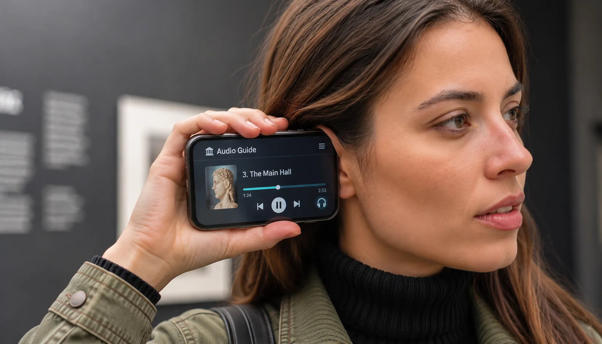

Dr. Rosa Sala
QR-Code-Audioguides und Smartphone-Lautsprecher: Stören Besucher ohne Kopfhörer andere Besucher?

Die kurze Antwort
- Ein QR-Code-Audioguide (eine Web-App, die im Browser des Smartphones läuft) gibt den Ton normalerweise über den Lautsprecher des Smartphones wieder. Eine Webseite kann den Ton nicht zuverlässig an die leise Hörmuschel senden, die für Telefonate verwendet wird.
- Eine native App (wie man sie aus dem App Store oder von Google Play herunterlädt) kann die Audiowiedergabe besser steuern: Sie kann die Hörmuschel nutzen oder die Wiedergabe erst starten, wenn Kopfhörer angeschlossen sind. Allerdings müssen Besucher diese App zunächst herunterladen und installieren, was nur sehr wenige tun.
- An den meisten Veranstaltungsorten reichen einfache Maßnahmen aus: Besucher verwenden ihre eigenen Kopfhörer oder sie verringern die Lautstärke und halten das Smartphone ans Ohr.
- Für Veranstaltungsorte und Fahrzeuge, die mehr benötigen, kann ein kurzer Hörtest, der auf einem als „Huggins-Pitch“ bezeichneten Höreffekt basiert, im Browser überprüfen, ob ein Besucher Kopfhörer trägt. Besucher, die diesen Test nicht bestehen, erhalten denselben Inhalt in Form von Text und Bildern.
Die Sorge ist berechtigt: Handygeräusche stören die meisten Menschen
Wenn wir einem Museum oder einem Schiffsbetreiber einen QR-Code-Audioguide vorstellen, taucht immer wieder ein Einwand auf: „Die Leute werden ihn laut abspielen und alle anderen stören.“
Diese Befürchtung ist berechtigt. In einer Umfrage von Transport for London unter 1.000 Kunden im Juni 2025 gaben 70 % an, dass laute Musik und Telefonate ohne Kopfhörer ein Ärgernis darstellen [1]. In einer im April 2025 veröffentlichten YouGov-Umfrage gaben 79 % der Briten an, dass es sie stört, wenn Menschen Musik oder Videos laut auf ihrem Handy abspielen, und 41 % sagten, dass es sie sehr stört [2].
Eine ruhige Galerie oder ein Ausflugsboot, auf dem die Passagiere eine Stunde lang dicht beieinander sitzen, ist genau die Art von Ort, an dem dies eine Rolle spielt. Einige Veranstaltungsorte bevorzugen daher eine native App oder gemietete Geräte, die mehr Kontrolle über die Tonwiedergabe ermöglichen. Doch diese Optionen sind mit eigenen Kosten verbunden.
Warum ein Web-App-Audioguide über den Lautsprecher wiedergegeben wird
Die meisten Smartphones verfügen über zwei Audioausgänge.

- Die Hörmuschel befindet sich am oberen Rand des Bildschirms. Sie ist für Telefonate konzipiert, bei denen das Telefon ans Ohr gehalten wird. Sie ist leise und unauffällig.
- Der Lautsprecher befindet sich in der Regel am unteren Rand. Er dient zur Wiedergabe von Musik, Videos und für Freisprechanrufe.
Bei vielen neueren Handys fungiert die Hörmuschel auch als zweiter Lautsprecher für Musik und Videos. In diesem Modus wird der Ton mit Lautsprecherlautstärke wiedergegeben, nicht mit der leisen Lautstärke eines Telefonats.
Eine native App kann das Betriebssystem anweisen, den Ton im Anrufmodus über die Hörmuschel wiederzugeben. Messaging-Apps tun dies, wenn Sie das Telefon ans Ohr halten, um eine Sprachnachricht abzuhören. Eine Webseite kann dies nicht zuverlässig bewerkstelligen:
- Unter Android unterstützen Chrome und Firefox die Browserfunktion zur Auswahl eines Audioausgangs (
setSinkId) überhaupt nicht [3]. - Auf dem iPhone kann Safari den Ton als Nebeneffekt der Mikrofonnutzung auf die Hörmuschel umleiten. Fehlerberichte, die sich über mehrere Jahre hinweg auf verschiedene iOS-Versionen erstrecken, zeigen, dass dieses Verhalten inkonsistent ist [4]. Eine Webseite müsste zudem jeden Besucher um Zugriff auf das Mikrofon bitten, nur um eine Aufnahme abzuspielen.
Daher wird jeder browserbasierte Audioguide über den Lautsprecher wiedergegeben, es sei denn, der Besucher schließt Kopfhörer an. Dies ist eine Eigenschaft mobiler Browser und keine Designentscheidung eines Anbieters.
Was eine native App leisten kann und was dies kostet
Eine native App hat mehr Kontrolle über die Audiowiedergabe als eine Webseite. Sie kann den Ton über die Hörmuschel wiedergeben, wie bei einem Telefonat. Sie kann die Wiedergabe auch so lange verweigern, bis Kopfhörer angeschlossen sind. Allein für das Lärmproblem funktioniert dies.
Der Preis dafür ist die Reichweite. Besucher müssen die App finden, herunterladen und installieren, bevor sie etwas hören können. In unserer Analyse von 175 offiziellen Audioführer-Apps für Museen haben nur 2,47 % der Besucher diese heruntergeladen. Bei einer einstündigen Bootsfahrt mit mobilen Daten und einer festgelegten Abfahrtszeit ist die Hürde sogar noch höher.
Die Wahl besteht also nicht zwischen einer lauten Web-App und einer leisen nativen App. Sie besteht vielmehr zwischen einem Audioguide, den fast jeder Besucher öffnen kann, und einem Audioguide, den nur wenige Besucher jemals nutzen werden. Die bessere Frage ist, ob eine Web-App die gleiche Kontrolle über Kopfhörer erlangen kann. Das ist möglich, wie wir im Folgenden zeigen.
Warum auch das Verteilen von Kopfhörern keine gute Lösung ist
Einweg-Ohrhörer. Früher haben wir diese selbst angeboten, doch wir haben damit aufgehört. Ohrhörer gehören zu den Kleingeräten, und Kleingeräte sind die Art von Elektronikschrott, die am seltensten recycelt wird. Laut dem „Global E-waste Monitor 2024“ der Vereinten Nationen fielen im Jahr 2022 weltweit 62 Millionen Tonnen Elektronikschrott an, von denen nur 22,3 % als ordnungsgemäß gesammelt und recycelt dokumentiert wurden. Bei Kleingeräten lag die dokumentierte Quote bei 12 % [5].
Es gibt zudem eine ökologische Dimension, die Museen nicht außer Acht lassen sollten. In einer Zeit, in der Klimawandel und Abfallvermeidung zunehmend Teil der öffentlichen Debatte sind, werden sich die Besucher immer bewusster, welchen ökologischen Fußabdruck die Orte hinterlassen, die sie besuchen. Ein Korb voller Plastik-Ohrhörer am Eingang, von denen jedes Paar eine Stunde lang benutzt und dann weggeworfen wurde, vermittelt eine eher unglückliche Botschaft. Er schafft einen sichtbaren Widerspruch zwischen einem modernen Besuchererlebnis und einem Wegwerf-Umgang mit Ressourcen. Einige Besucher werden dies bemerken, und manche werden es vielleicht sogar in ihren Bewertungen erwähnen.
Anschlüsse. Kabelgebundene Kopfhörer müssen zum Smartphone des Besuchers passen. Heutzutage bedeutet das eine 3,5-mm-Buchse, Lightning bei älteren iPhones oder USB-C. Seit dem 28. Dezember 2024 müssen neue, in der EU verkaufte Smartphones über USB-C verfügen [6], doch die Smartphones in den Taschen der Besucher werden noch jahrelang gemischt sein. Eine Einrichtung müsste daher drei verschiedene Typen vorrätig halten.
Verleih von Bluetooth-Kopfhörern. Jeder Besucher müsste die Kopfhörer mit seinem eigenen Smartphone koppeln, wobei das Personal helfen müsste. Am Ende des Besuchs muss der Besucher das Gerät auf seinem Smartphone entfernen („vergessen“), die Einrichtung muss die Kopfhörer reinigen und aufladen, und der nächste Besucher beginnt von vorne. Das bringt genau den Aufwand bei Handhabung und Hygiene zurück, den ein Audioguide auf dem eigenen Smartphone eigentlich beseitigen soll.
Was wir für die meisten Veranstaltungsorte empfehlen
In den meisten Einrichtungen reichen einige einfache Maßnahmen aus.
- Bitten Sie die Besucher, Kopfhörer mitzubringen. Weisen Sie bei der Buchung, auf dem Ticket und auf Ihrer Website darauf hin. Viele Besucher haben ohnehin Ohrhörer dabei.
- Zeigen Sie die Alternative. Ein Besucher ohne Kopfhörer verringert die Lautstärke und hält das Smartphone wie bei einem Telefonat ans Ohr (siehe Abbildung unten). Wenn der Ton vom unteren Rand des Smartphones kommt, wird dieses Ende ans Ohr gehalten.
- Setzen Sie Hinweisschilder und Personal ein. Ein deutliches Schild neben dem QR-Code schafft klare Erwartungen. Saalpersonal oder Mitarbeiter können den seltenen Besucher, der dies ignoriert, darauf ansprechen, so wie sie es bei jedem anderen Verhalten tun würden.

Zwei Aspekte erweisen sich in der Praxis als hilfreich: Die Tracks sind kurz und werden einzeln abgespielt, nicht kontinuierlich wie Musik. Und unserer Erfahrung nach reichen eine klare Einweisung und eine kurze Erinnerung durch das Personal in der Regel aus. Viele unserer Kunden arbeiten auf diese Weise, ohne Kopfhörer bereitzustellen.
Eines hilft jedoch nicht: die Aufnahmen leiser zu stellen. Wir haben dies bei einem Kunden getestet. Die Besucher drehten einfach die Lautstärke ihrer Smartphones höher, und Besucher mit leistungsschwächeren Geräten konnten den Audioguide selbst bei voller Lautstärke nicht mehr richtig hören. Der Grund dafür ist, dass sich Smartphones stark darin unterscheiden, wie laut sie wiedergeben können, und nur wenige Menschen sind sich dessen bewusst. Im Jahr 2023 hat GSMArena die Lautsprecher von mehr als 110 Smartphones gemessen. Das lauteste und das leiseste Modell lagen etwa 10 Lautstärkeeinheiten auseinander, was ungefähr 10 Dezibel entspricht [9]. Als Faustregel gilt: Ein Unterschied von 10 Dezibel klingt etwa doppelt so laut. Eine Aufnahme, die auf einem lauten Smartphone laut genug ist, ist also auf einem leisen zu leise. Die Datei kann die Lautstärke nicht steuern. Das kann nur der Besucher.
Die Optionen auf einen Blick
| Option | Was funktioniert | Was funktioniert nicht |
|---|---|---|
| Eigene Kopfhörer der Besucher | Keine Ausrüstung, keine Handhabung | Nicht jeder bringt sie mit |
| Smartphone ans Ohr gehalten, geringe Lautstärke | Es wird nichts Zusätzliches benötigt | Weniger bequem; hängt vom Besucher ab |
| Einweg-Ohrhörer | Vor Ort erhältlich | Abfall, Kosten, drei verschiedene Steckertypen |
| Leihkopfhörer mit Bluetooth | Wiederverwendbar | Kopplung, Reinigung, Aufladen, Zeitaufwand für das Personal |
| Native Audioguide-App | Kann die Hörmuschel nutzen oder Kopfhörer verlangen | Nur wenige Besucher laden die App herunter |
| QR-Code-Audioguide mit Kopfhörer-Check | Kein Download erforderlich; überprüft, ob Kopfhörer verwendet werden; Textversion für alle anderen | Fügt zu Beginn einen kurzen Test ein |
Für strengere Anforderungen: ein Kopfhörer-Check auf Basis des Huggins-Pitch
Manche Betreiber benötigen mehr als nur gute Manieren. Ein typischer Fall ist ein Ausflugsboot oder -bus, in dem sich die Fahrgäste nicht von einem lauten Nachbarn entfernen können. Für diese Fälle hat Nubart einen Kopfhörertest entwickelt, der im Browser läuft und keine App benötigt.
Die wissenschaftliche Grundlage: Ein Ton, der nur über Kopfhörer hörbar ist
Der Test nutzt den Huggins-Pitch, einen Höreffekt, der erstmals 1958 von Cramer und Huggins beschrieben wurde [7]. Er funktioniert ein wenig wie ein 3D-Film.
In einem 3D-Kino erhält jedes Auge ein leicht unterschiedliches Bild. Keines der beiden Bilder enthält Tiefeninformation. Ihr Gehirn vergleicht die beiden Bilder und erzeugt die Tiefe selbst. Nimmt man die Brille ab, sehen beide Augen beide Bilder gleichzeitig: Die Tiefe ist verschwunden.
Der Huggins-Pitch bewirkt dasselbe mit Schall.
- Zwei fast identische Töne. Jedes Ohr nimmt das gleiche Rauschen wahr, ähnlich dem Geräusch eines Wasserfalls. In einem Ohr wird ein sehr kleiner Teil dieses Rauschens verändert. Die Veränderung ist zu gering, um sie zu hören.
- Das Gehirn erledigt den Rest. Jedes Ohr hört für sich genommen nur das Rauschen. Doch das Gehirn vergleicht die beiden Ohren, nimmt den kleinen Unterschied wahr und wandelt ihn in einen leisen Ton um. Dieser Ton ist weder im linken noch im rechten Ton enthalten. Er existiert nur im Kopf des Zuhörers. Wenn wir den veränderten Teil Schritt für Schritt verschieben, wird der Ton zu einer kurzen Melodie.
- Kopfhörer sind wie 3D-Brillen. Sie liefern jedem Ohr seinen eigenen Klang. Aus einem Lautsprecher vermischen sich die beiden Klänge in der Luft, und beide Ohren nehmen dieselbe Mischung wahr. Dem Gehirn fehlt ein Vergleichsmaßstab, sodass die Melodie schwächer wird oder ganz verschwindet.
Die Idee, diesen Effekt als Kopfhörertest zu nutzen, stammt von Forschern des University College London. Sie führten online Hörtests durch und mussten wissen, ob die Teilnehmer zu Hause tatsächlich Kopfhörer trugen. Also probierten sie es aus: Eine Gruppe hörte über Kopfhörer zu, eine andere über Lautsprecher. Etwa 80 % der Kopfhörergruppe hörten den versteckten Ton jedes Mal. In der Lautsprechergruppe waren es nur etwa 20 %.
Woher kommen diese 20 %? Die Teilnehmer hörten über die Lautsprecher ihrer eigenen Computer zu. Die Erklärung der Forscher lautet, dass jemand, der nahe an einem linken und einem rechten Lautsprecher sitzt – genau zwischen beiden –, die beiden Töne dennoch teilweise getrennt wahrnimmt [8]. Ein Smartphone kann das nicht. Seine Lautsprecher sitzen nur wenige Zentimeter voneinander entfernt, sodass sich die beiden Töne vollständig vermischen. In unseren eigenen Tests war die Melodie auf einem Laptop gut zu hören, über den Lautsprecher eines Smartphones hingegen nicht.
Der Test deckt zudem eine gängige Abkürzung auf: das Hören mit nur einem Ohrhörer. Mit nur einem Ohr hat das Gehirn nichts zum Vergleichen, sodass kein Ton wahrgenommen wird.
So funktioniert der Test für den Besucher

Nach der Auswahl einer Sprache wird der Besucher gebeten, Kopfhörer aufzusetzen. Es gibt zwei Tasten, von denen jede zu einem anderen Ablauf führt.
- „Ich habe keine Kopfhörer“: direkt zur Textversion, ohne Test. Der Besucher erhält zu jedem Track ein Bild und den Text. In einem Nubart-MOTION-Audioguide mit automatisch ausgelösten Tracks erscheinen Text und Bild automatisch, sobald das Fahrzeug die jeweilige Sehenswürdigkeit erreicht. Es wird nichts laut abgespielt.
- „OK“: ein kurzer Hörtest, dann der Audioguide.
- Der Besucher hört drei Töne und tippt auf denjenigen, bei dem hinter dem Rauschen eine leise Melodie zu hören ist. Jede Taste leuchtet auf, während der entsprechende Ton abgespielt wird.
- Dies wird dreimal wiederholt. Alle drei Antworten müssen richtig sein.
- Nach einer falschen Antwort erhält der Besucher einen weiteren Versuch, wobei die Töne in einer neuen Reihenfolge abgespielt werden. Raten hilft nicht viel: Selbst bei beiden Versuchen würden nur etwa 7 von 100 Besuchern durch reines Glück bestehen.
- Besucher, die bestehen, erhalten den Audioguide. Besucher, die zweimal scheitern, erhalten die Textversion, sodass niemand ohne Inhalt dasteht.
Niemand bleibt ohne Inhalt: Text und Bilder ersetzen den Ton
Dies ist der Aspekt, der uns am meisten am Herzen liegt. Ein Besucher, der keine Kopfhörer hat oder den Test nicht besteht, wird nicht ausgeschlossen. Er folgt derselben Führung auf dem Bildschirm: Bilder, Bildkarussells und der vollständige Text jedes Tracks werden zum richtigen Zeitpunkt angezeigt. Auf einem Boot oder in einem Bus erscheint jeder Text, sobald das Fahrzeug die jeweilige Sehenswürdigkeit erreicht.
Jeder erhält die Inhalte. Lediglich der Ton ist von Kopfhörern abhängig.
Der Huggins-Pitch-Test ist nicht perfekt. Einige Besucher mit Hörverlust auf einem Ohr werden ihn nicht bestehen. Gleiches gilt für Personen, die nur einen Ohrhörer tragen oder deren Smartphone auf Mono-Ton eingestellt ist; zudem erschwert eine sehr laute Umgebung den Test [8]. Für alle diese Personen steht die Textversion zur Verfügung. Der Check ist kein Hörtest und entscheidet niemals darüber, ob jemand der Führung folgen kann. Es handelt sich um dieselbe Version, die auch gehörlose oder schwerhörige Besucher nutzen können.
Der Check endet nicht mit dem Beginn der Führung. Werden die Kopfhörer unterwegs getrennt, bemerkt der Audioguide dies und stoppt die Wiedergabe. Dies funktioniert sowohl bei kabelgebundenen als auch bei Bluetooth-Kopfhörern.
Dadurch erhält ein Web-App-Audioguide die Art von Kontrolle, für die früher eine native App erforderlich war – und das ganz ohne Download.
Fazit: Einfach anfangen und den Check nur dort ergänzen, wo Sie ihn brauchen
Unser Rat lautet: Vertrauen Sie Ihren Besuchern zunächst. Beginnen Sie ohne den Check. Bitten Sie die Besucher, Kopfhörer mitzubringen, und zeigen Sie denjenigen, die keine haben, wie man leise zuhört – mit geringer Lautstärke und dem Smartphone am Ohr. An den meisten Veranstaltungsorten reicht dies bereits aus.
Sollten Sie anschließend Beschwerden oder schlechte Bewertungen wegen lauter Besucher erhalten, muss nichts neu entwickelt werden. Den Kopfhörer-Check in einem bestehenden Nubart-Audioguide zu aktivieren, erfordert bei uns nur wenige Klicks. Ihre QR-Codes, Ihre Inhalte und die Gewohnheiten Ihrer Besucher bleiben unverändert.
Häufig gestellte Fragen
Werden QR-Code-Audioguides über den Lautsprecher des Smartphones wiedergegeben?
Ja, es sei denn, der Besucher schließt Kopfhörer an. Mobile Browser lassen es nicht zu, dass eine Webseite zuverlässig die leise Hörmuschel nutzt, die Smartphones für Telefonate verwenden.
Würde eine native App das Lautsprecherproblem lösen?
Weitgehend ja. Eine native App kann die Hörmuschel nutzen oder den Anschluss von Kopfhörern verlangen. Der Preis dafür ist der Download: In unserer Studie zu 175 offiziellen Audioguide-Apps von Museen haben nur 2,47 % der Besucher die App heruntergeladen.
Kann eine Web-App prüfen, ob Besucher Kopfhörer tragen?
Nicht, indem sie das Smartphone fragt: Eine Webseite kann nicht zuverlässig auslesen, welches Audiogerät angeschlossen ist. Sie kann es aber per Klang testen. Der Kopfhörer-Check von Nubart spielt eine Melodie ab, die nur mit Kopfhörern zu hören ist, und startet den Audioguide für Besucher, die sie erkennen.
Was ist der Huggins-Pitch?
Ein schwacher Ton, den das Gehirn erzeugt, wenn beide Ohren dasselbe Rauschen mit einem kleinen Unterschied in einem schmalen Frequenzband erhalten. Er ist mit Kopfhörern zu hören und über Lautsprecher schwach oder gar nicht wahrnehmbar. [7][8]
Was geschieht mit Besuchern ohne Kopfhörer?
In der Standardkonfiguration verringern sie die Lautstärke und halten das Smartphone ans Ohr. Mit dem Kopfhörer-Check erhalten sie den Audioguide als Text und Bilder.
Stellt Nubart Kopfhörer zur Verfügung?
Nein. Einweg-Ohrhörer verursachen Elektronikschrott, und es gibt keinen einheitlichen Typ, der zu jedem Smartphone passt.
Quellen
- Transport for London, Pressemitteilung, 26. August 2025: New TfL campaign encourages customers to use headphones on public transport.
- YouGov, 28. April 2025: Littering, loudspeakers and Lime bikes: what public nuisances bother Britons most?
- Can I use: Browser-Unterstützung für
HTMLMediaElement.setSinkId, geprüft im November 2026. - WebKit Bugzilla, Bug 218012, eröffnet 2020, zuletzt geändert im Mai 2026.
- ITU und UNITAR, Global E-waste Monitor 2024, Pressemitteilung vom 20. März 2024.
- Europäische Kommission, 28. Dezember 2024: EU-Vorschriften für einheitliche Ladegeräte (EU common charger rules).
- Cramer, E. M., und Huggins, W. H. (1958). Creation of pitch through binaural interaction. Journal of the Acoustical Society of America, 30(5), 412–417.
- Milne, A. E., Bianco, R., Poole, K. C., et al. (2021). An online headphone screening test based on dichotic pitch. Behavior Research Methods, 53, 1551–1562.
- GSMArena, 30. Dezember 2023: Here are the loudest phones we tested in 2023.
Wir hoffen, dass Ihnen dieser Artikel weitergeholfen hat. Abonnieren Sie unseren Newsletter, damit Sie keinen unserer Beiträge verpassen.
Das könnte Sie auch interessieren

Die Akzeptanz von Audioguide-Apps in Museen
Eine eingehende Analyse realer Daten zeigt, dass weniger als 3 % der Museumsbesucher Audioguide-Apps nutzen, was ernsthafte Fragen hinsichtlich ihrer Wirksamkeit aufwirft.

Die Audioguides von Nubart sind barrierefrei
Barrierefreiheit gewinnt in Museen zunehmend an Bedeutung. Mit den Audioguides von Nubart können Sie alle Anforderungen erfüllen.